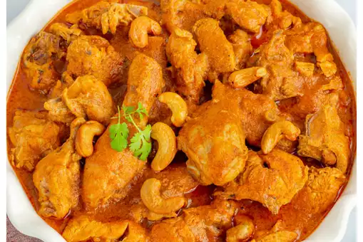

return
Shahi Chicken Korma

Chicken shahi Korma is a rich and flavourful Indian dish that is part of the Mughlai cuisine.
It is known for its creamy texture and aromatic spices. “Shahi” translates to “royal,” indicating its association with the royal kitchens of the Mughal emperors.
Chicken shahi korma is great served simply with white Basmati rice or another flavoured rice dish.
You might also like to serve it with naans or chapattis.
The sauce is so good you’ll want to scoop up every last drop with that bread!
Ingredients
- 1 1/2 tsp indian restaurant spice mix
- 2 tsp kashmiri chili powder or 1/2 tsp cayenne mixed with 1 1/2 tsp paprika
- 1/4 tsp turmeric
- 1/2 tsp kosher salt
- 3 Tbsp oil
- 1 3 inch piece of cinnamon stick
- 2 green cardamom pods
- 2 tsp garlic/ginger paste
- 15 oz curry base
- 10-12 oz pre-cooked chicken
Steps
- Make the spice mix.
- Combine and mix the coconut milk powder and almond flour with enough water to form a thin paste.
- Heat your frying pan (don't use non-stick) briefly over medium heat. Add the oil.
- When the oil starts to shimmer add the cinnamon and cardamom and cook until they start to crackle.
- Turn down the heat and add the spice mix. This is the critical step. Stir it constantly for 30 seconds. If it starts to darken lift the pan off the heat. You want the spice mix to cook in the oil but not burn.
- Add 3 oz of curry base. Stir until bubbles form (little craters really), around 30 seconds. Think lively boil. Watch the edges of the pan. The curry can stick here. Sticking is OK. Just scrape it back into the base. Burning is bad.
- Now add 6 oz of curry base and stir briefly. Let it cook until the bubbles form again. This takes 1-2 minutes.
Add the rest of the curry base and let cook until the bubbles form.
- Stir in the coconut/almond paste.
Turn the heat down to low and add the pre-cooked chicken.
Let the curry simmer for about 5 minutes. If it gets too thick add a bit more curry base. Don't add water.
- Add the sugar. Taste and decide if you want it sweeter. Creep up on it. You can add sugar. You cannot take it away.
- Add heavy cream to taste. None is a really good curry. 2 Tbsp is a creamy, kingly version. Decide what you are in the mood for. The cream does dull the flavours but it adds richness and tempers the heat.
Garnish with a bit of chopped fresh cilantro if desired and serve with rice or Indian flatbread.